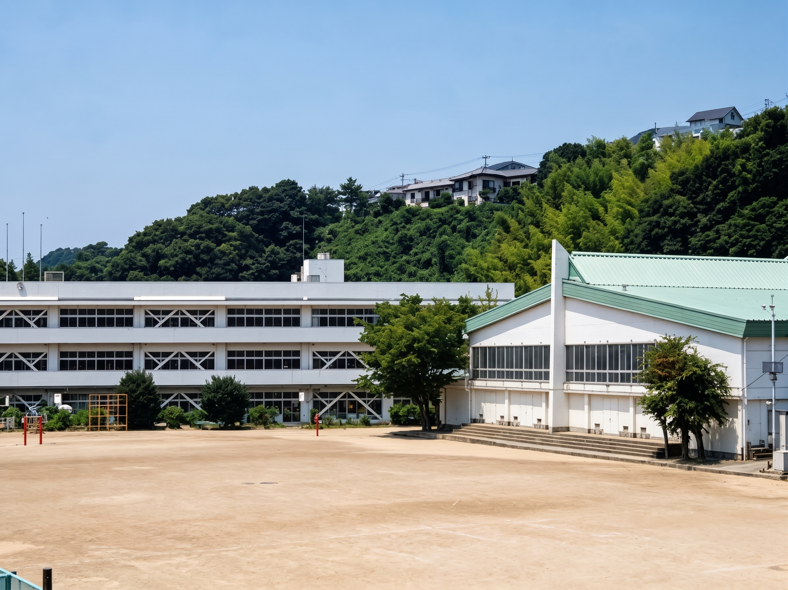
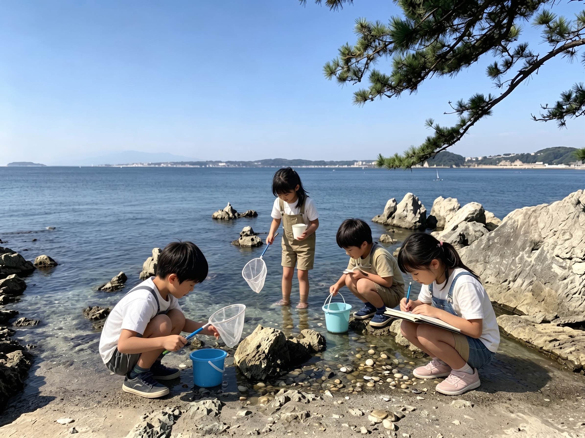

子どもたちの未来のために

葉山町教育委員会の学校施設に関する資料では、2025年の児童生徒数は2,495人で、 総合計画で見込んでいた2,703人を208人下回っています[1]。
出典：葉山町教育委員会 学校施設に関する資料（2025年）[1]
同資料では、小学校4校の校舎が築50年以上、中学校2校が築40年以上となっていることも示されています [1]。子どもたちの人数の変化と、学校施設の老朽化。 その両方に向き合いながら、将来の教育環境を考える必要があります。
私は、子どもの数が減るから学校を小さくする、古くなったから建て替える、という判断だけでは 不十分だと考えています。通学にかかる時間や安全性、友達と学び合える環境、特別な支援を必要とする 子どもへの対応など、「そこで過ごす子どもにとってどうか」を出発点にしたいと思います。
町ですでに進められている学校再整備の議論を踏まえ、逗子市・横須賀市との連携や越境通学などに ついても、選択肢として比較・検討することを提案します。ただし、地域ごとの通学先を一方的に 決めるのではなく、子どもたち、保護者、学校関係者の声を聞き、教育面の効果と家庭の負担を 丁寧に確認します。

学校の外にも、学びの機会を広げたいと考えています。海で自然や安全について学ぶ、山を歩いて 生き物や地形に触れる、地域の大人からスポーツや仕事の経験を教わる。そうした体験を、家庭の 事情にかかわらず選びやすくしたいと思います。
図書館や公園、体育施設も、設備を整えるだけでなく、利用できる時間、参加費、移動手段まで 含めて考えます。参加人数だけでなく、これまで参加できなかった子どもにも機会が届いたかを 確認しながら、葉山で育つ楽しさを広げていきます。
曲田 和史 KAZUFUMI KYOKUTA